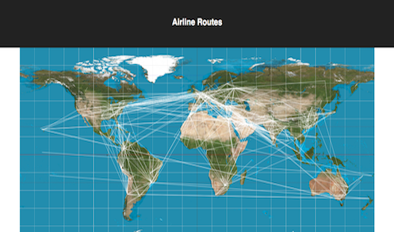
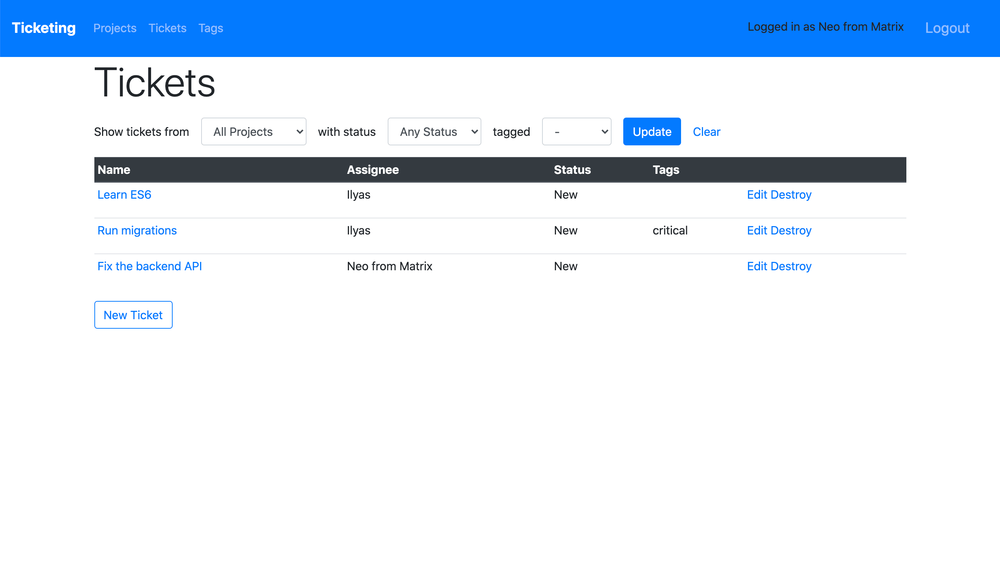

Ilyas Kussainov
I'm a full-stack Software Engineer based in Toronto, Ontario, with experience in JavaScript, Node.js, PostgreSQL, Ruby, Rails, React, Docker, and Kubernetes.
Most recently, I co-created Satellite, an open-source multi-instance GraphQL backend-as-a-service for dynamic web applications.

Satellite is an open-source GraphQL backend-as-a-service (BaaS). It lets teams easily deploy and manage GraphQL backends for web applications.
Satellite abstracts away the complexity of building a GraphQL backend. It lets the application developer define their entire backend using only a single input - a GraphQL schema. Satellite's multi-instance architecture, based on Kubernetes, lets developers create and use as many backends as they need.
READ THE SATELLITE CASE STUDYOther projects
-

Reaction
Trello-like application with back-end API built with Ruby on Rails, and front-end UI built with React + Redux
-

Airline Routes
An application that allows users to view and filter airline routes on a clickable svg map. Bootstrapped with Create React App.
-

Ticketing
Ticket-tracking application built with Ruby on Rails. User-login, comments, tags, tickets and projects.